Sequence as input
在有些背景下input是一组数量不定的vector。
举例来说，在语句处理领域，可以将每个word视作一个vector；在语音处理方面，可以将一段语音的一个Frame视作一个vector；或者在Graph的问题中，可以将一个node视作一个vector。
Sequence as input的问题主要有以下三种：
- 每个vector都有一个label（例如POS tagging）；
- 整个sequence的output是一个label（例如sentiment analysis、speaker recognization）；
- Model决定输出vector的数量，叫做Seq2Seq（例如翻译）。
本文以第一种：每个vector都有一个label（又叫Sequence labling）为例来讨论Self-attention的工作机制。
self-attention
对于一个sequence，fully-connected network有一个显著的缺陷：无法考虑多个vector之间的关联。而HW2中多个vector拼接为一个vector的方法不适用于seq长度可变的情况。self-attention就是用来处理sequence as input的情况的。
工作机制
对于seq中每一个input vector，self-attention会吃一整个seq的信息，并输output一个特特殊的vector：
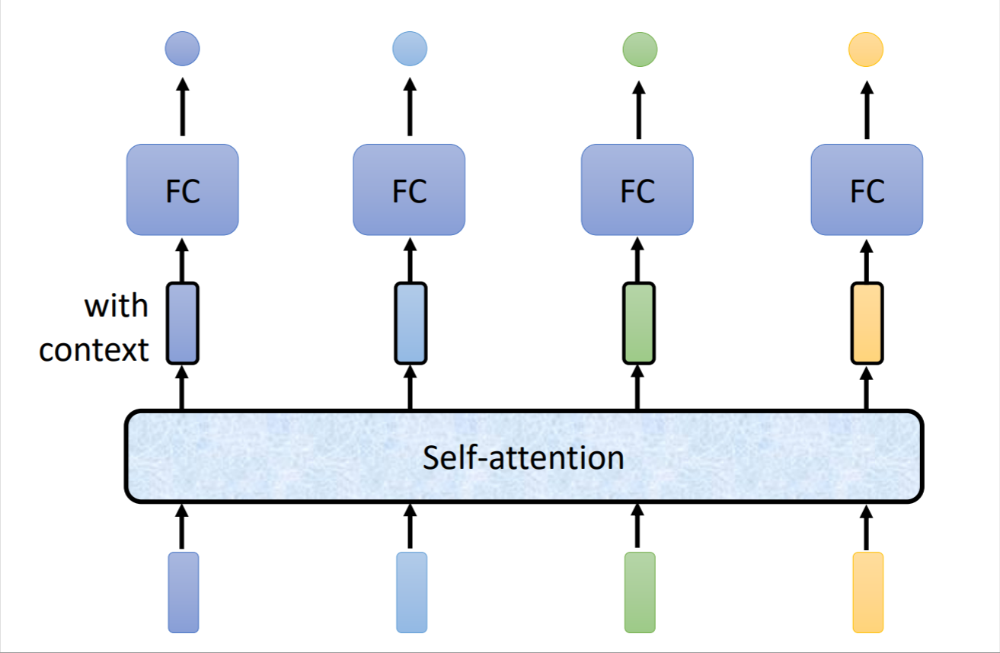
具体是如何做到的后面会详细说明，self-attention可以叠加使用多次：self-attention处理整个seq的信息，然后使用fc处理每个单独vector的信息，再使用self-attention处理整个output vector seq的信息…
假设input seq中有一个vector是$a^i$，那么其输出$b^i$是综合了seq中所有vector得到的：
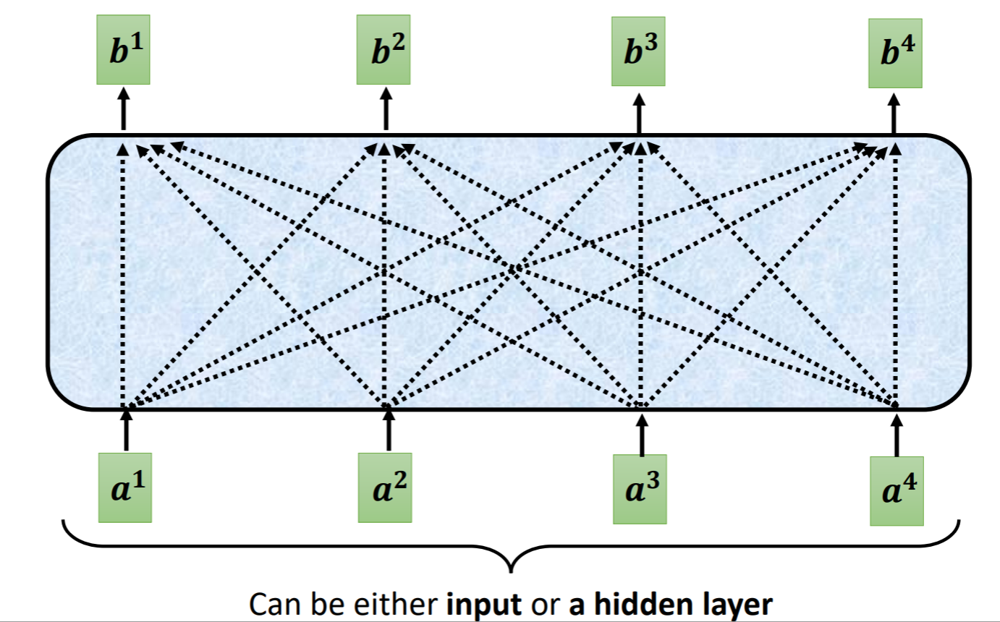
这里只解释$b^1$的形成机制，其他的同理。
relevant
我们想找到所有与$a^1$相关的vector，又不想考虑与$a^1$无关的vector，因此，第一步就是计算$a^1$与其他vector的相关性。这里有一个专门处理两个vector $a^i$和$a^j$关联程度的方法，即输入$a^i$和$a^j$，输出其关联程度$\alpha_{i,j}$。具体的计算方法不一，较为常见的为使用Dot-product：令$a^i$乘以矩阵$W^q$得到$q$，$a^j$乘以矩阵$W^k$得到$k$，那么$\alpha_{i,j}=q\cdot k$，其中$\alpha$叫做attention score。还有一种常见的方法为Additive，如下图所示：
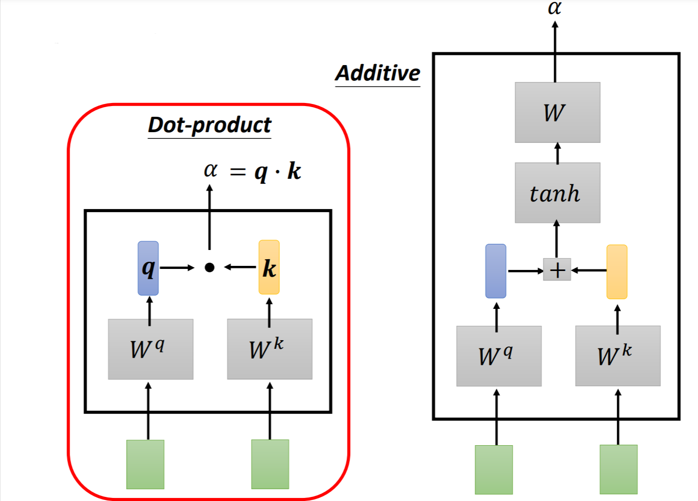
本文主要使用Dot-product，这是最常用的，也是transformer中使用的。
应用在self-attention中，计算$a^1$和其他所有vector的关联性，实际操作中，自己也要和自己计算关联性。计算完关联性后，所有的$\alpha$经过一个softmax后得到$\alpha^\prime$（没有什么道理，使用其他normalization也行）：
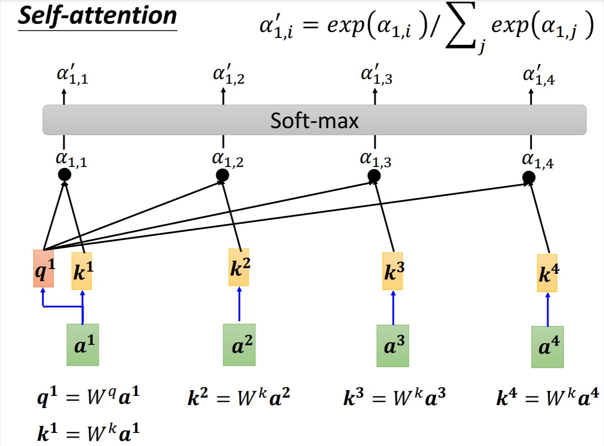
得到所有的attention score后，要从中提取信息，方法为：对于$\alpha^1$，先将所有的$\alpha$乘以一个矩阵$W^v$得到$v$，然后乘以其对应的attention score，再将结果相加（即对$v$做一个weighted sum）得到$b^1$，那么谁的$v$越接近$b^1$，代表谁和$\alpha^1$越相关：
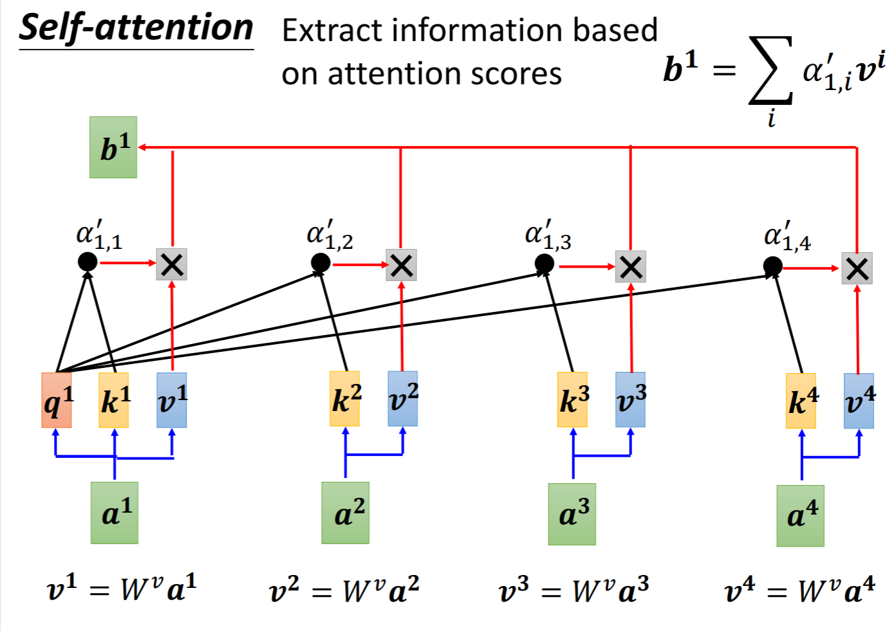
在这个例子中，从$a^1~a^4$得到$b^1~b^4$的过程，就是self-attention的过程。其计算过程看似复杂，但以矩阵的视角来进行，其所有计算都是同时进行的。
self-attention matrix-representation
所有$b^i$的得到方式与$b^1$同理，那么有：
将所有的$a$拼接为一个矩阵，可以得到：
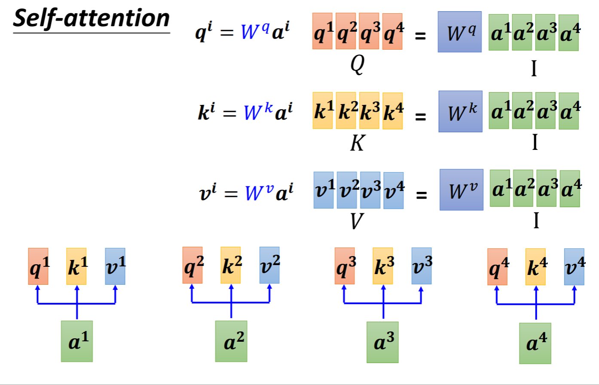
接下来，每一个$q$会和每一个$k$做Dot-product，得到attention score，同样将其拼接为一个矩阵：
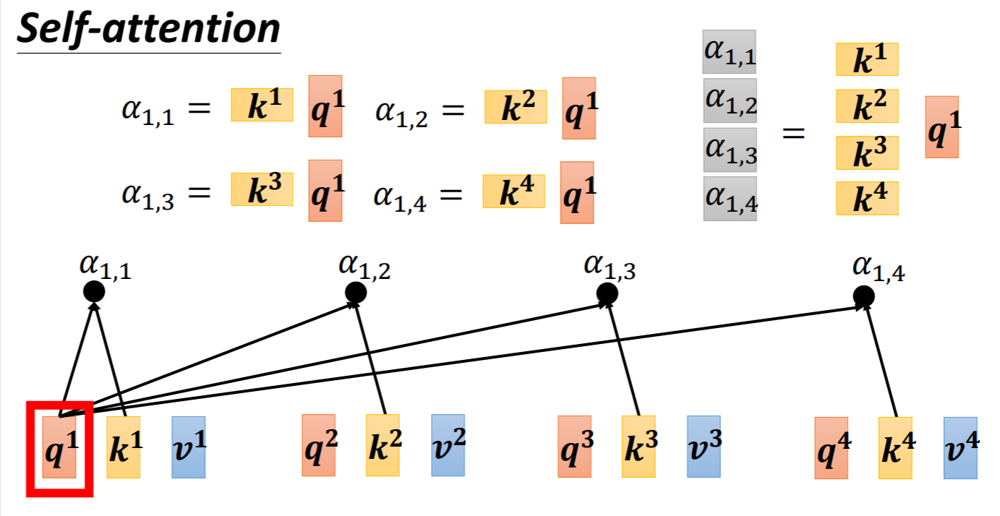
综合以上两步以及normalization，可以得到所有的attention score：
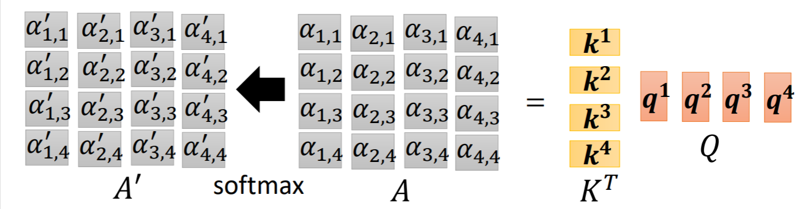
最后对每一个$a$的$v$做一个weighted sum，得到$b$：
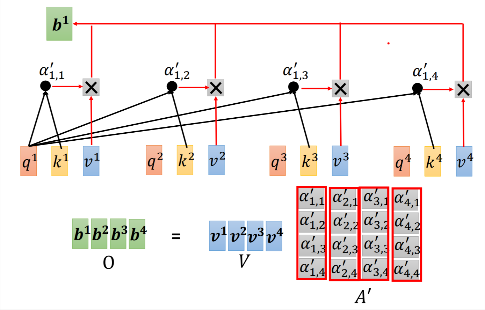
总结以上所有过程，得到self-attention真正运作的过程：
看似复杂的操作，其中需要学习的parameters只有$W^q、W^k、W^v$。
Multi-head Self-attention
[scode type=”share”]why multi-head?
两个事物的相关性可能有多种表现形式，需要用不同的$q、k、v$来表示不同的相关性[/scode]
以two heads为例，其做法为：对于一个$a^i$的$q^i、k^i、v^i$，分别乘以两个不同的矩阵，得到两组矩阵：$q^{i,1}、k^{i,1}、v^{i,1}$和$q^{i,2}、k^{i,2}、v^{i,2}$，对两组矩阵分别进行self-attention。
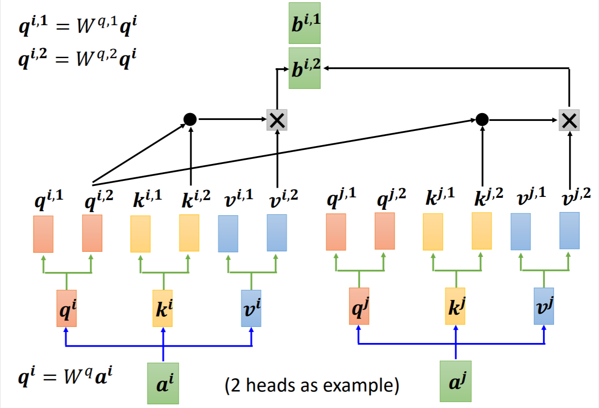
随后将其attention score综合起来，得到最终的attention score
Positional Encoding
上面的self-attention有一个缺陷：无法考虑每个vector的位置信息。但位置的信息在某些情况下非常重要。
解决方法为使用Positional Encoding，即为seq中每一个vector $a$都加上一个位置信息$e$，这个e是人为设置的，所以其设置方法仍是一个可深入研究的问题。下图是一个$e$的设置方法举例：
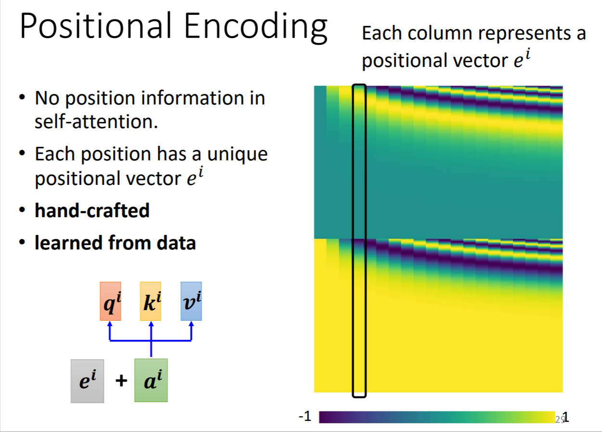
一篇有关Positional Encoding的paper：Learning to Encode Position for Transformer with Continuous Dynamical Model
Applications
self-attention在许多方面都有应用，例如transformer 《attention is all you need》；BERT 《BERT: Pre-training of Deep Bidirectional Transformers for Language Understanding》
Truncated Self-attention
self-attention中需要学习的$W^q、W^k、W^v$，其parameters的大小是同seq中vector的数量成平方关系的，因此seq中的vector数量很大很大的时候，parameters的数量会特别大，导致Model训练很困难。因此在某些情况下，可以只考虑seq中部分vector，此即Truncated self-attention。例如在语音辨识中，当前vector可能只和其附近的vector有关联，详见《Transformer-Transducer: End-to-End Speech Recognition with Self-Attention》。
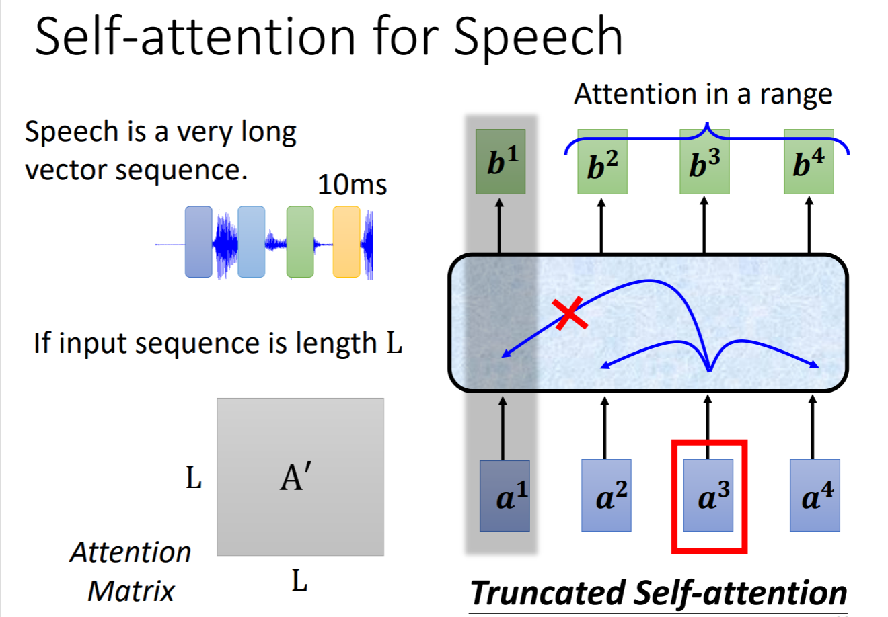
self-attention for Image
对于一张图片，可以同时将其三个channels视作一个Sequence，这也可以视作为sequence as input，因此对于一张图片，也有应用self-attention的可能性。
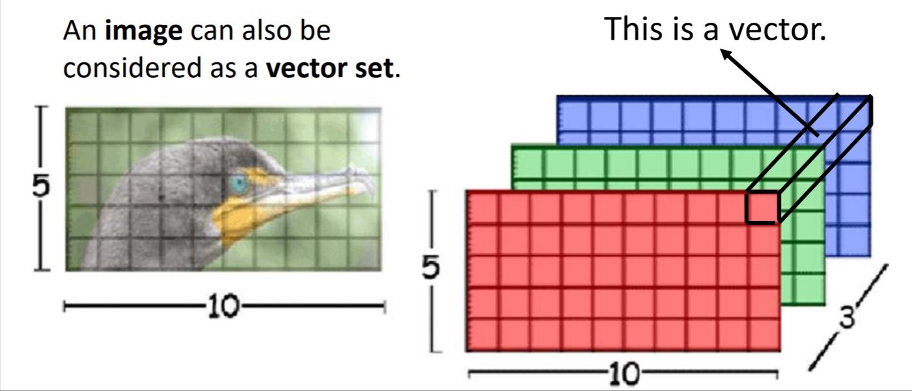
下面这两个paper就在image处理中使用了self-attention：
《Self-Attention Generative Adversarial Networks》
《End-to-End Object Detection with Transformers》
Self-attention v.s. CNN
self-attention和CNN都是同时考虑多个vector，如果将一组强相关的vector视作一个receptive filed，那么相比于CNN的receptive filed，self-attention的receptive filed是Model学习得到的。
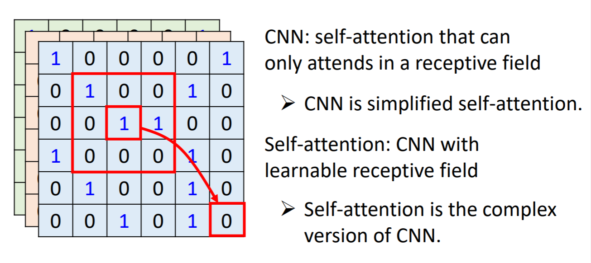
这篇paper使用严谨的数学推导描述了其关系：《On the Relationship between Self-Attention and Convolutional Layers》
这篇paper中讲述了self-attention和CNN的对比：《An Image is Worth 16x16 Words: Transformers for Image Recognition at Scale》
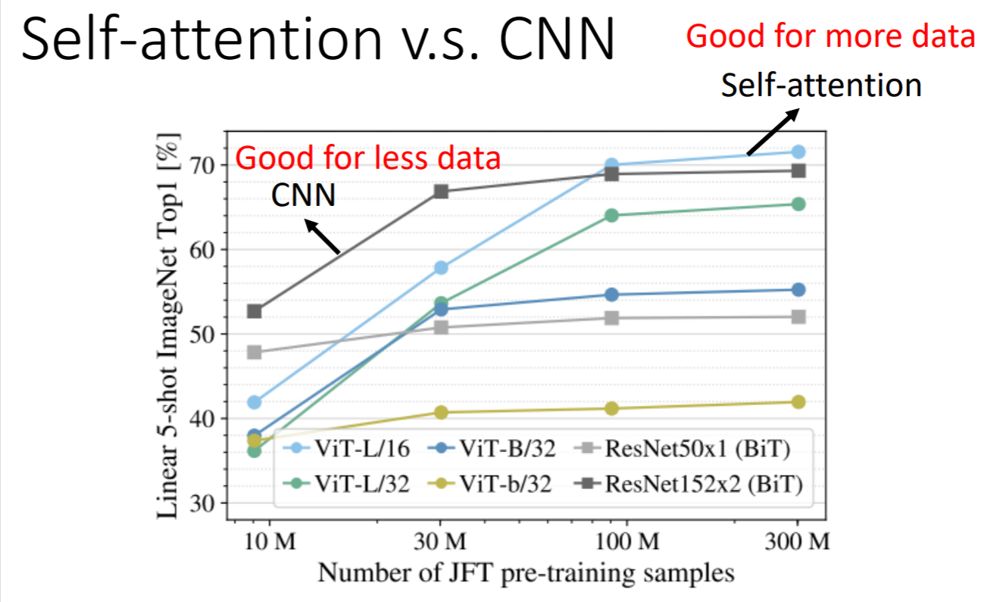
结果显示，在train data较少的时候，CNN表现更好；在train data较多的时候，self-attention效果更好。可能的原因是：self-attention的Model弹性更大，需要更多的data来train。
Self-attention v.s. RNN
以下图来解释两者的关系：
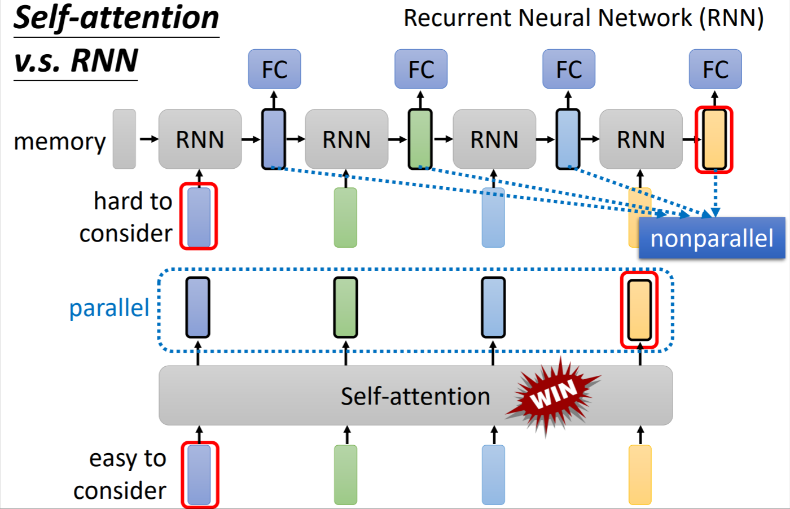
相较于self-attention，RNN很难考虑距离较远的vector，并且RNN的无法平行计算，其效率远不如self-attention。因此，self-attention在很大程度上是优于RNN的，当前很多RNN架构也逐渐self-attention化。更详细的讲解：《ransformers are RNNs: Fast Autoregressive Transformers with Linear Attention》
Self-attention for Graph
Graph中的每个node也可以作为seq输入，因此graph也可以应用self-attention。这也是GNN的一种。